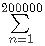

Lowest-cost Search
Problem 328
We are trying to find a hidden number selected from the set of integers {1, 2, ..., n} by asking questions.
Each number (question) we ask, has a cost equal to the number asked and we get one of three possible answers:
- "Your guess is lower than the hidden number", or
- "Yes, that's it!", or
- "Your guess is higher than the hidden number".
Given the value of n, an optimal strategy minimizes the total cost (i.e. the sum of all the questions asked) for the worst possible case. E.g.
If n=3, the best we can do is obviously to ask the number "2". The answer will immediately lead us to find the hidden number (at a total cost = 2).
If n=8, we might decide to use a "binary search" type of strategy: Our first question would be "4" and if the hidden number is higher than 4 we will need one or two additional questions.
Let our second question be "6". If the hidden number is still higher than 6, we will need a third question in order to discriminate between 7 and 8.
Thus, our third question will be "7" and the total cost for this worst-case scenario will be 4+6+7=17.
We can improve considerably the worst-case cost for n=8, by asking "5" as our first question.
If we are told that the hidden number is higher than 5, our second question will be "7", then we'll know for certain what the hidden number is (for a total cost of 5+7=12).
If we are told that the hidden number is lower than 5, our second question will be "3" and if the hidden number is lower than 3 our third question will be "1", giving a total cost of 5+3+1=9.
Since 12>9, the worst-case cost for this strategy is 12. That's better than what we achieved previously with the "binary search" strategy; it is also better than or equal to any other strategy.
So, in fact, we have just described an optimal strategy for n=8.
Let C(n) be the worst-case cost achieved by an optimal strategy for n, as described above.
Thus C(1) = 0, C(2) = 1, C(3) = 2 and C(8) = 12.
Similarly, C(100) = 400 and  C(n) = 17575.
C(n) = 17575.
Find C(n).